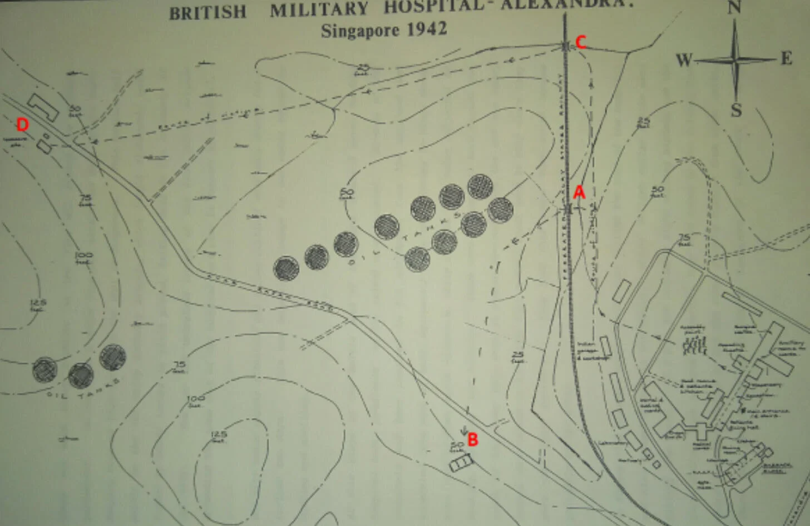

Alexandra Hospital massacre 14–15 Feb 1942
Japanese soldiers raid the British Military Hospital and annihilate patients, nurses, and staff on medical grounds.
Meant to be healing grounds, a place where the wounded were kept safe. Until the Japanese soldiers turned it into their own slaughterhouse instead.
By 13th February, their 18th Division had already defeated allied resistance during its way down along the western side of Singapore, towards Kent Ridge.
Close to Kent Ridge is the Alexandra Hospital, completed in 1938 as the British Military Hospital (BMH). Its reputable role as the principal military hospital for the British in the Far East during World War II was equipped with 356 beds and other medical, surgical and officer wards.
The 32nd Company of the Royal Army Medical Corps (RAMC) and 30 Queen Alexandra Nursing Sisters served as hospital staff. The hospital was well distinguishable with red crosses on the roofs and lawns, with more hanging from the windows.
By the 13th, the hospital was overloaded. Instead of the 550 bed capacity it was designed for, about 900 patients were being treated at once.
The men of the 32nd Company of the Royal Army Medical Corps were running the hospital under deplorable conditions. Clean water was scarce and carefully rationed, light was reserved only for medical procedures, and the dead lay unburied, wrapped in nothing more than mere blankets.
Patients were left on stretchers in wards that were designed to fit 24 beds, but now with more than 70. Corridors looked more like a refugee camp as the wide corridors were converted into make-shift wards.
By the next morning, nearby oil tanks were established as an enemy target, which faced heavy artillery power. Caught in this precarious situation of a crossfire, the hospital witnessed shells flying overhead. Yet as the fighting dragged on, the strikes crept closer to its doorstep, falling directly onto the hospital grounds.
.webp)
At about 1.00pm, a Japanese soldier was spotted approaching the building. In response, a British officer stepped out to meet him, muttering “hospital” whilst pointing to the Red Cross armband on his sleeve — a symbol meant to protect medical personnel even under the circumstances of war.
However, as cunning as the Japanese forces were known to be, no one would have imagined that the Japanese soldier actually ignored it and fired at him.
Thankfully though, the bullet missed him. Barely unscathed, the officer made his run back into the compound, but by then, more Japanese soldiers had already swarmed the hospital.
For the subsequent hour, three large groups of Japanese soldiers collectively ambushed and barged into the hospital.
In groups, the Japanese soldiers went through each room, shooting every civilian in sight, bayonetting and beating up doctors, elderly and patients berserkly:
The first attack was on the hospital’s laboratory, in which many scared hospital staff ran for their lives. However, the enemy soldiers spared no time and opened fire on them, killing two and wounding another.
Meanwhile, another group of soldiers entered the makeshift Intake Room, in the reception area of the hospital. This area held about a hundred patients. Like wolves, the enemy soldiers took the chance to begin beating up the patients lying there.
In an attempt to spare himself from the ongoing mass bloodshed, a doctor in charge of the Intake Room, held up a white sheet in surrender but was quickly bayoneted by one of the enemy soldiers.
Greedy for even more bloodshed, more enemy soldiers hopped onto the bandwagon in the Intake Room, and joined in on the shooting and bayonetting of the patients.
Some patients tried to flee through the main entrance but were gunned down before they could even do so. Others tried to escape along the corridors, but ran into a group of enemy soldiers who took to the shooting and bayonetting instead.
These same soldiers then proceeded into two wards, killing several patients there. The halls and rooms were filled with nothing but a cacophony of agonising, blood-curdling cries of the wounded, and the sound of gunshots from the Japanese.
When it was the Japanese’s turn with Sergeant MacDougal, with only one working arm, Sergeant MacDougal tried to personally disarm an enemy soldier but was murdered in the process.
The third group of enemy soldiers made their way up onto the porch outside the operating theatre where an operation had just been completed. Those soldiers began shooting wildly as the operating staff hurried to take shelter in the operating theatre, but were stopped before they could get inside.
With the option to fight or flight thrown out of the window, they could only raise their hands over their heads in surrender. Ordered to leave the theatre, they carefully made their way out, but of course, got bayoneted just as they did.
The massacre was not just a physical nightmare, but a psychological ploy too.
The still anaesthetised patient who had just been operated on was not spared either, as was also bayoneted. From here, the enemy soldiers gained this epiphanic idea of physically ransacking for humans in the surgical wards too.
And so, they eagerly moved through each surgical ward, torturing the helpless patients by striking them at their wounds. After wiping out the area, they moved into the corridor to continue randomly murdering more patients there.
This slaughter lasted an agonising half hour but was painfully described as an eternity. It resulted in the deaths of around 50 patients and staff, with many more left wounded.

It does not finish here. Later around 3.30pm, the enemy soldiers on the ground floor seized 200 survivors, mostly staff and some patients.
In groups of eight, they were tied together and ordered to march toward a cluster of buildings some distance from the hospital. Even the gravely injured were not excused as those that fell along the way, were immediately executed on the spot.
Upon reaching a row of latrines (toilets), the men were segmented into groups of 50 to 70 people and squeezed into three tiny rooms. There was neither ventilation nor water, and too claustrophobic to even sit or lie down as bodies pressed against bodies.
Under such cage-like conditions, a handful of men inevitably failed to make it to the next morning.
At 11am the following morning, the remaining men who survived were given water. But in order to receive it, the prisoners were made to fetch it themselves, in groups of two.
However, as some left, those who stayed behind were met with the screams and cries of the men who had gone. It was only then evident that behind the whole water ploy, was the Japanese executing the prisoners right when they left the rooms.
All benefits of doubt were erased upon the sight of Japanese soldiers wiping blood from their bayonets thereafter.
It is estimated that around 280 staff and patients were killed over two days. Trapped in a tiny, barely breathable human cage, everyone there was destined to die, it was just a matter of when.
Until, suddenly, shooting around the vicinity continued. As a silver lining, a shell had hit the building where the prisoners were being held. Many took the opportunity to escape but were ultimately shot to death. However, five successfully hid and made their way to the safety of British troops nearby.
Nothing can justify this lunatic level of bloodshed and mass murder, not even under the pretext of war. A battlefield on medical grounds is ironic in its most egregious form.
However, the Japanese had something to say about this.
The Japanese had reasoned that on the 13th, earlier that day, a few Indian soldiers had fired on the enemy soldiers from the hospital rooftop and ran off. In retaliation, the enemy soldiers raided the hospital, in search of the perpetrators, but as the Indians had gone, the Japanese took their wrath out on the civilians instead.
The following day, on the 16th of February, the commander of the Japanese 18th Division, Lieutenant-General Mutaguchi, personally visited the now grief-stricken and lifeless (literally) building and apologised on behalf of his men.
An unverified report revealed that a lower ranking officer who incited the massacre was executed by the Japanese command. Meanwhile, those that passed were buried and laid to rest in the soccer field in the back of the hospital grounds.
Justice was never served, even after the war concluded. During the post-war trials, the Alexandra Hospital massacre was impossible to prove. Although there was a substantial amount of evidence that proved the massacre took place, identification of the perpetrators was unworkable. Hence, the perpetrators were never identified nor sentenced.
.webp)